Internship Project Report · Unified Mentor
A MEAN-stack web application that lets people preview paint colours, two-tone walls and patterns on a photo of their own room, with realistic light and shadow, before they buy paint.
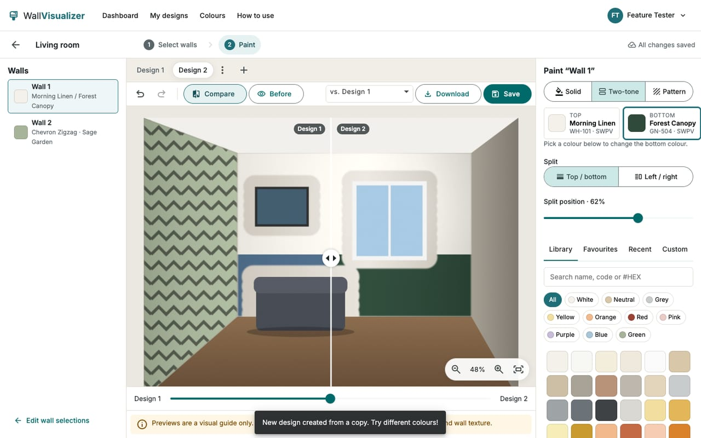
| Submitted by | Novshita |
|---|---|
| Programme | Unified Mentor internship |
| Technology | MongoDB · Express.js · Angular 22 · Node.js |
| Source code | github.com/novshita/smart-wall-paint-visualizer |
| Date | October 2026 |
Choosing a wall colour is one of the most common home-improvement decisions, and one of the easiest to get wrong. A small paint chip under shop lighting rarely looks the same as a whole wall in a real room, with its own daylight, shadows and furniture. A wrong choice means buying more paint, repainting, and disappointment.
The project specification identifies four problems:
Smart Wall Paint Visualizer solves this with a browser-based tool. A user uploads a photo of their own room, marks the walls with simple tools, and tries colours, two-tone splits and patterns. The paint is blended so that the photo's own lighting, shadows and wall texture show through, which makes the preview look like paint rather than a flat coloured overlay. Designs can be saved, compared side by side, and downloaded at full resolution.
The same tool supports interior designers and painters during consultations, and paint retailers helping customers decide.
| Primary objectives | Secondary objectives |
|---|---|
| Preview paint colours on the user's actual room photo | Support designers and painters in consultations |
| Reduce incorrect paint selection and repainting expense | Assist retailers in customer decision-making |
| Increase confidence in interior decisions | Encourage digital adoption in home-improvement planning |
| Provide a realistic, interactive visualisation experience | Demonstrate a practical MEAN-stack implementation |
| In scope (built) | Out of scope |
|---|---|
| Room photo upload (JPG/PNG) with validation | Automatic AI wall detection |
| Manual wall selection: polygon, brush and eraser | AR/VR live camera preview |
| Solid, two-tone and pattern application | Native mobile application |
| Opacity, brightness and finish adjustment; before/after | Direct paint purchase and payment |
| Save, reopen, compare variants and download designs | |
| User and admin roles, admin dashboard with analytics |
| Role | Who | What they can do |
|---|---|---|
| Guest | Any visitor | Landing page, colour library, colour details, How to use guide |
| User | Homeowners, designers, painters, retail staff | Upload photos; select walls; paint, compare and save designs; download images; favourite colours; manage profile |
| Admin | System manager | Everything a user can do, plus manage colours, patterns, users and settings, view all designs and activity, and see the KPI dashboard |
The application follows a classic three-tier design: an Angular single-page app in the browser, a stateless Express REST API, and MongoDB for data. Images are kept out of the database in object storage and are only reachable through short-lived signed links.
| Layer | Technology | Why |
|---|---|---|
| Frontend | Angular 22 (standalone components, signals), Angular Material, TypeScript, SCSS | Required MEAN stack; signals make the editor's state simple and fast; Material gives accessible, consistent components |
| Graphics | HTML5 Canvas, SVG | Pixel-level control for realistic blending; SVG for charts and diagrams |
| Backend | Node.js, Express 5, Joi, Mongoose 9 | Lightweight REST API with validation on every endpoint |
| Database | MongoDB (Atlas in production) | Flexible documents fit nested designs (variants → walls → styles) |
| Images | sharp, AWS S3 (local disk in development) | Fast re-encoding, metadata stripping, resizing; private object storage |
| Security | bcrypt, JWT, Helmet, express-rate-limit | Spec §12 requirements |
| Testing | Mocha + Supertest + in-memory MongoDB, Vitest, Playwright, axe | API, app, end-to-end and accessibility coverage |
| DevOps | Docker, GitHub Actions, Render, Vercel | Repeatable builds and automatic checks on every change |
Seven MongoDB collections. Images are stored in object storage; the database keeps only their storage keys and metadata.
| Collection | Purpose | Key indexes |
|---|---|---|
| users | Accounts, roles, favourites, last login | email (unique) |
| projects | Photos, design variants, walls and styles | userId + updatedAt |
| colors | Paint catalogue (48 seed colours in 10 families) | code (unique), text (name, code), family, brand |
| patterns | Pattern tiles (8 seed patterns) | category |
| activity_logs | Logins, uploads, saves, downloads, sessions (for KPIs) | createdAt, action + createdAt |
| feedback | 1–5 satisfaction ratings | — |
| settings | Upload limit, formats, default finish, disclaimer | key (unique) |
All eleven pages from the specification are built, connected through navigation, and backed by the API.
| # | Page | Route | Access | Purpose |
|---|---|---|---|---|
| 1 | Landing | / | Public | Introduction, featured colours, call to action |
| 2 | Login / Register | /auth/login, /auth/register | Public | Authentication with field-level validation |
| 3 | Dashboard | /dashboard | User | Quick start, recent designs, favourite colours |
| 4 | Image upload | /projects/new | User | Drag-and-drop upload with checks and progress |
| 5 | Wall selection | /projects/:id/select | User | Polygon, brush and eraser tools |
| 6 | Studio | /projects/:id/studio | User | Paint, adjust, compare, save, download |
| 7 | Colour library | /colors | Public | Browse, search, filter, favourite |
| 8 | Saved designs | /projects | User | Reopen, rename, duplicate, download, delete |
| 9 | Profile | /profile | User | Account details, password, favourites |
| 10 | How to use | /help | Public | Tutorial, shortcuts, FAQ, disclaimer |
| 11 | Admin panel | /admin/* | Admin | Dashboard, colours, patterns, users, designs, activity, settings |
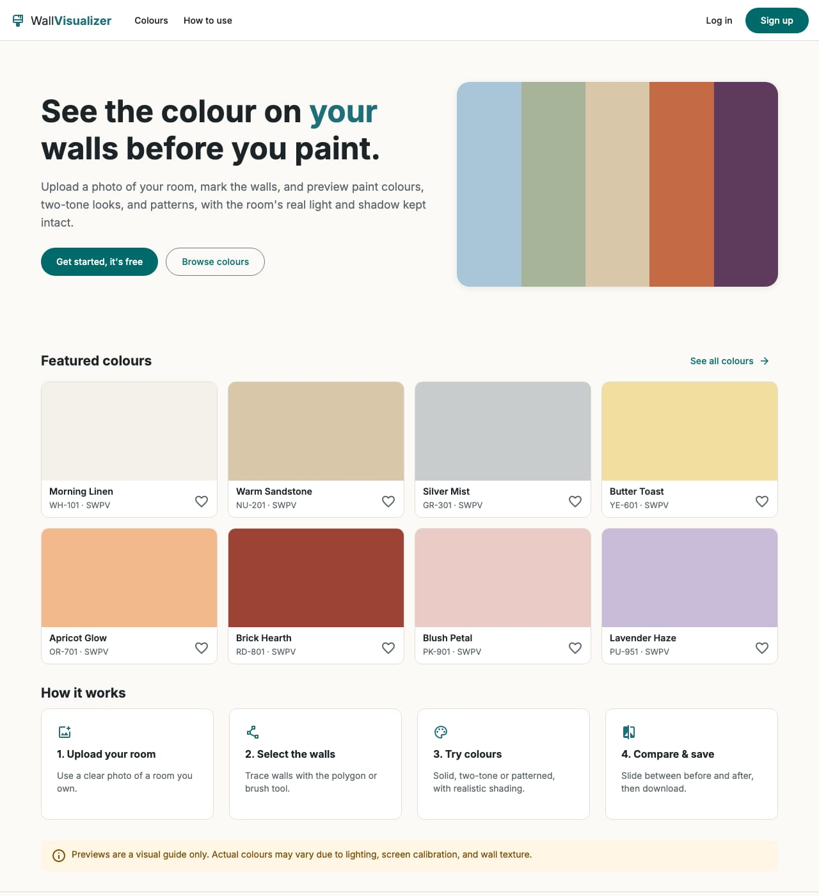
Users drag in a photo or choose one. The browser checks the type, size and dimensions instantly and shows a preview; the server then checks everything again. Users must confirm that they own the photo, as the project guidelines require. On the server each upload is re-encoded, which removes hidden data such as GPS location, and stored in three sizes: the original (for full-quality downloads), a working copy of at most 2000 px (for fast editing), and a thumbnail.
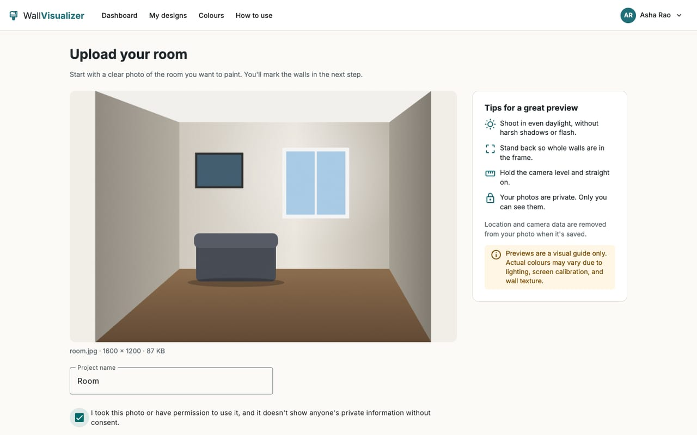
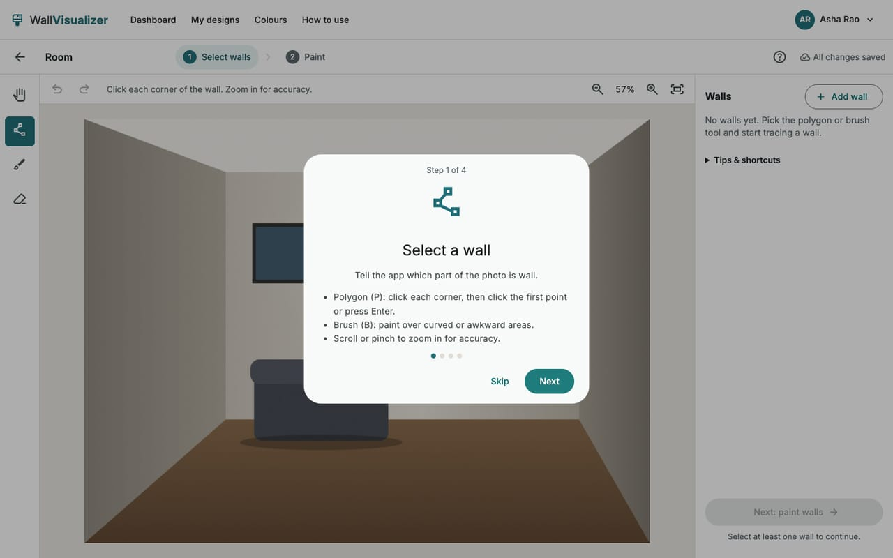
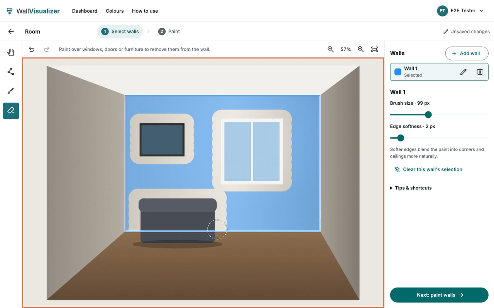
Each wall can be painted in one of three ways:
Finish (matte, satin, glossy), opacity, brightness and edge softness are adjustable per wall. The applied colour's name, code and brand are always shown, and a disclaimer reminds users that real results vary with lighting, screen calibration and wall texture.
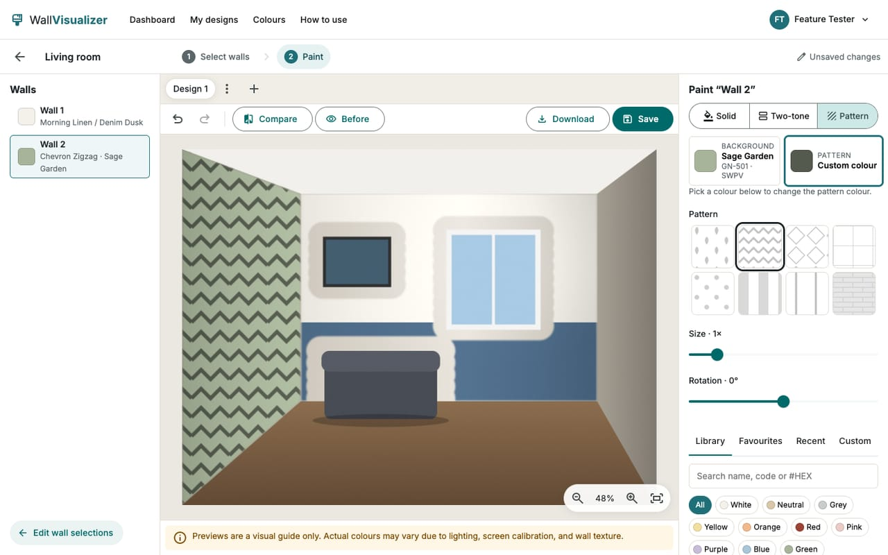
Users can try several ideas on the same photo. A new variant copies the current colours; walls are shared across variants, so editing a wall's shape updates every design. The compare slider shows the original photo, or another design, on one side of a draggable divider.
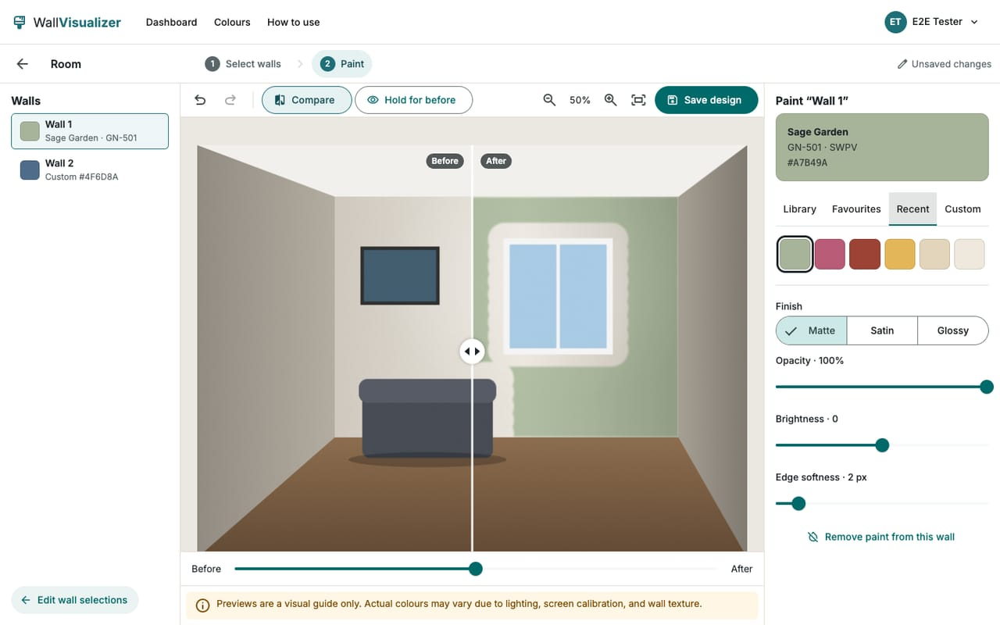
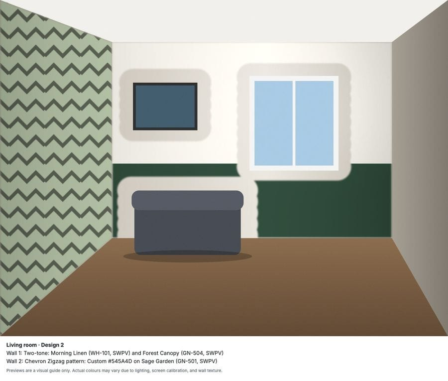
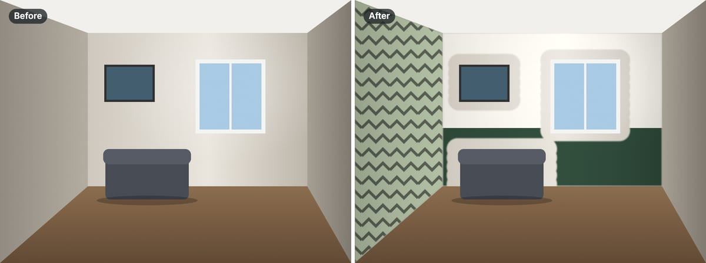
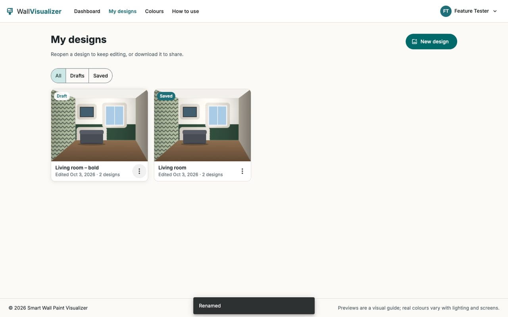
The library groups colours by family and supports search by name, code or HEX, and filters by room and finish. Filters are kept in the page address, so a search can be bookmarked or shared. Each colour has a detail page with HEX/RGB values, finish previews, suitable rooms, related colours and a “Try on my room” button that starts an upload with that colour pre-selected.
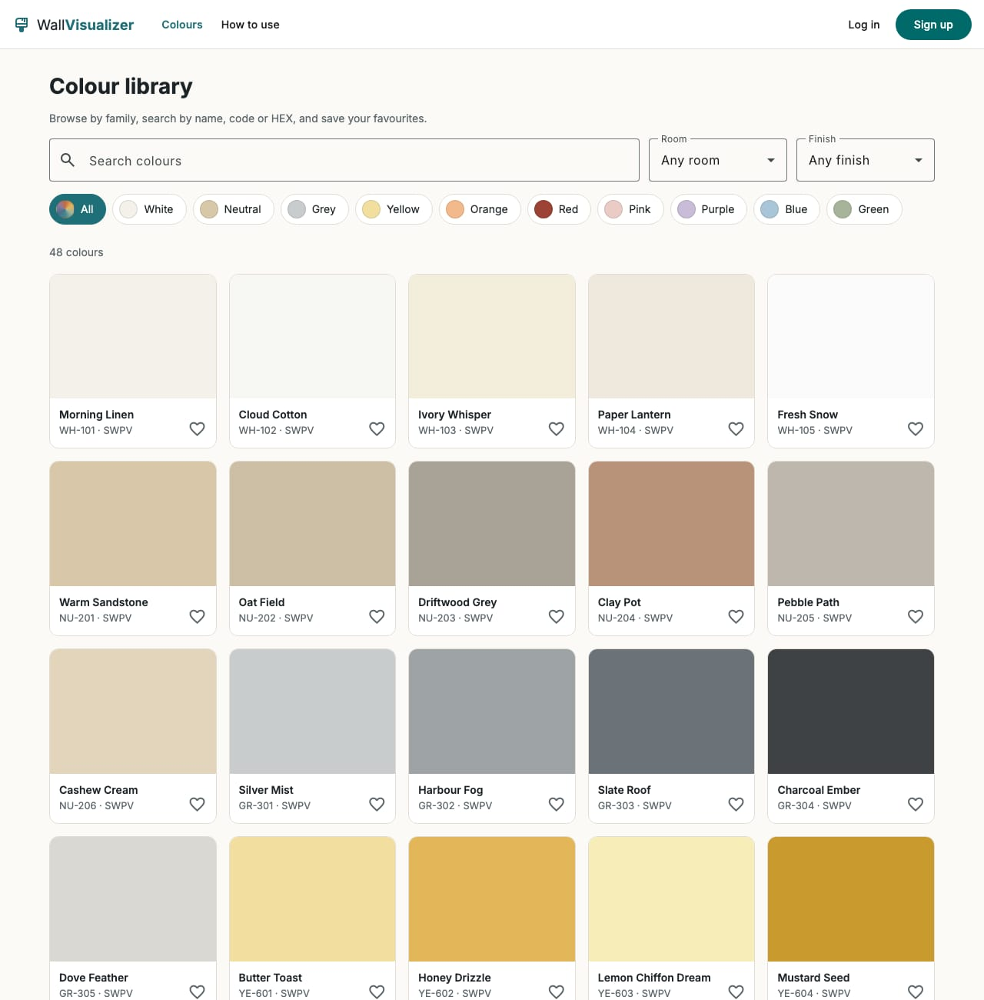
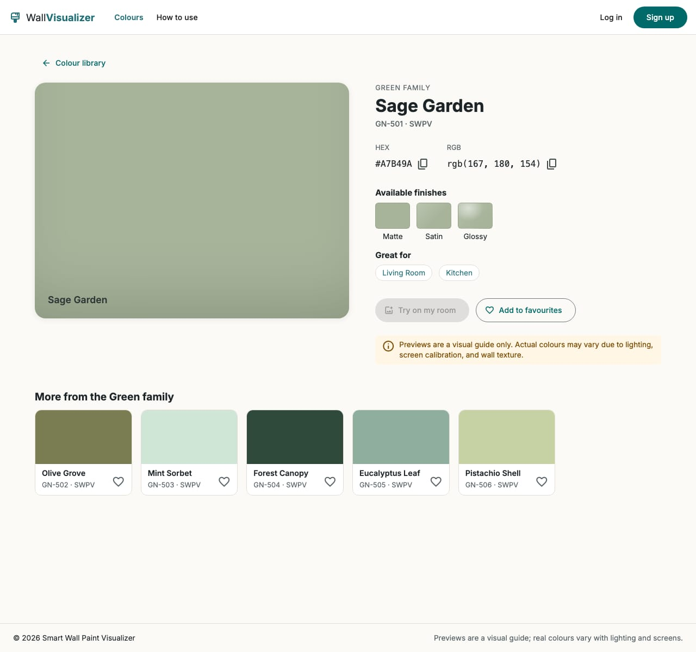
The quality of the product depends on making painted walls look real. Simply drawing a semi-transparent colour over the photo looks flat and fake, because it hides the shading that tells the eye a wall is three dimensional. The paint engine instead keeps each pixel's shading and replaces only its colour.
A useful property: on a perfectly evenly lit wall the result is exactly the paint colour, while real photos keep their shadows, light falloff and texture. Two-tone walls choose the colour per pixel by the split line (with a 1-pixel anti-aliased edge); patterns mix the two colours by the tile's coverage.
Masks and luminance are cached, so changing a colour only re-runs the per-pixel blend, using lookup tables for the sRGB conversions. On a 1600 × 1200 photo a colour change takes about 11–21 ms in Chrome, far inside the specification's target of 300 ms for a 2000 px image (§7). A unit test enforces the 300 ms budget on a 2000 × 1500 image.
Downloads re-run the same engine on the full-size original photo instead of the 2000 px working copy, as the specification requires (§8.6). Because walls are stored as vectors, they redraw sharply at any size.
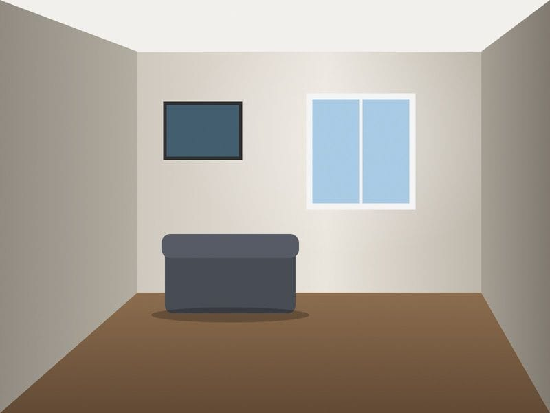
| Area | Measure |
|---|---|
| Passwords | bcrypt with cost 12; never returned by the API; strength rules (8+ characters, letter and number) |
| Sessions | JWT with 1-hour expiry; a password change or deactivation ends all existing sessions immediately (token versioning) |
| Login | Identical error and timing for wrong password vs unknown email, so attackers can't discover accounts; rate limiting |
| Authorisation | Role checks on every admin endpoint and page; users can only reach their own designs (others get “not found”, so ids can't be probed); admins can't lock themselves out |
| Uploads | File type checked by content (magic bytes), not name; size limit set by admin; corrupt, tiny and oversized (50 MP+) images rejected; every image re-encoded to strip metadata and hidden payloads; SVG pattern uploads refused |
| Image privacy | Photos never served publicly; only short-lived signed links (HMAC locally, AWS Signature V4 presigned URLs on S3); deleting a design deletes its files |
| Input | Joi validation on every endpoint; NoSQL operator stripping; escaped search terms; size limits on request bodies |
| Transport & headers | HTTPS redirect and HSTS in production; Helmet headers; Content-Security-Policy; CORS allow-list |
| Dependencies | npm audit in CI: 0 known vulnerabilities at submission |
The REST API lives under /api/v1 and returns JSON, with one consistent error format
({ status, message, errors[] }) that the app uses to show field-level messages. All
44 operations are documented with examples in an interactive Swagger UI at
/api/docs, where reviewers can log in and try every endpoint.
| Group | Examples |
|---|---|
| Auth | register, login, logout, get/update profile, change password |
| Projects | upload, list, get, save walls/styles, duplicate, upload render, delete |
| Catalogue | colours (list, search, facets, detail), patterns; admin create/update/remove and CSV/JSON import |
| Favourites | list, add and remove favourite colours and patterns |
| Admin | analytics, users, all designs, activity, settings |
| System | health check, public settings, activity events, feedback |
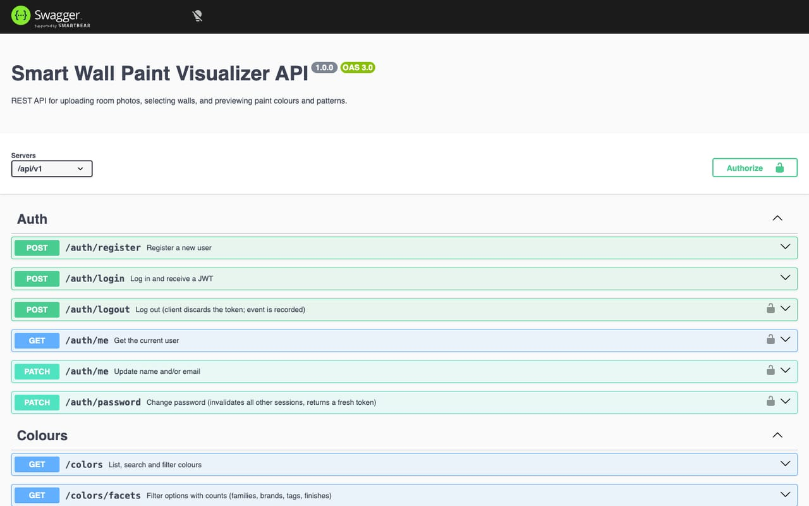
The dashboard shows the four KPIs from the specification (§14) for the last 7, 30 or 90 days and refreshes every 30 seconds: room photos uploaded, designs saved, average session duration (measured in the browser and sent even when the tab closes) and user satisfaction (a 1–5 star rating requested after downloads, at most once a week). It also shows daily trends with a table view, the rating distribution and the most-used colours. The chart colours were checked with a colour-vision-deficiency validator.
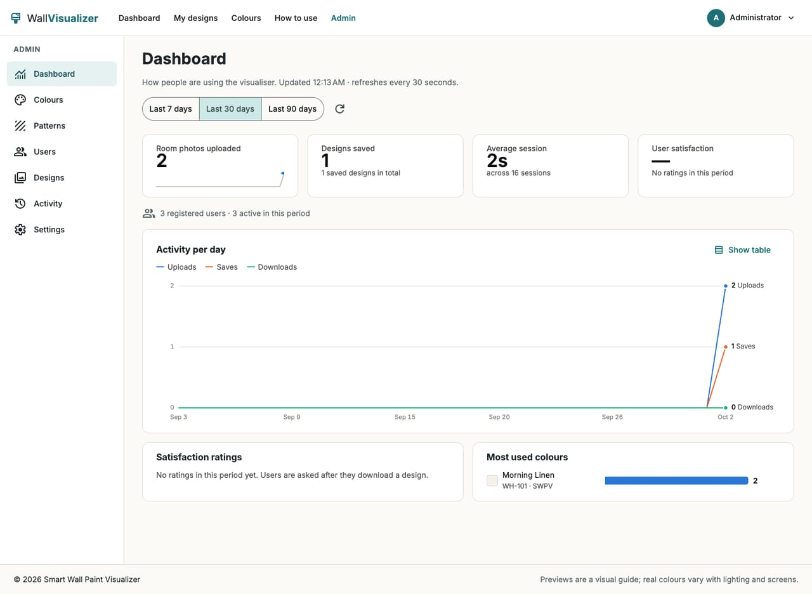
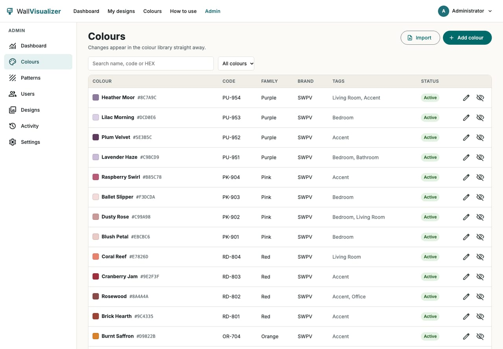
| Level | What is covered |
|---|---|
| API | Authentication and sessions; upload validation (fake files, GPS stripping, orientation, size limits); access control; signed links (tampering, expiry, path traversal); designs; admin features; CSV import; analytics; AWS signing checked against AWS's published example |
| App | Auth service and guards; forms; colour library; upload flow; editor geometry, undo history, zoom maths; the paint blend (flat wall equals the target colour, shadows kept, opacity, finish, two-tone, patterns); render-time budget; editor store (auto-save, variant sync, undo grouping) |
| End-to-end | Register → upload → select with both tools → paint → compare → save → download → reopen → delete; admin KPIs and colour management; blocked access for guests and other users |
| Accessibility | Automated WCAG 2.1 AA audit of every page; keyboard navigation and shortcuts; visible focus; labels and alt text; screen-reader announcements |
| Visual | Scripted browser runs with screenshots at desktop (1440 px) and tablet (1024 px) sizes; exported files checked for resolution and content |
| Continuous integration | GitHub Actions on every change: lint → tests → security audit → build → end-to-end tests → deploy |
Linting (ESLint) and formatting (Prettier) are enforced on both projects, and every feature was merged through a pull request with all checks passing.
| Layer | Service | Notes |
|---|---|---|
| Web app | Vercel | HTTPS, security headers; forwards /api to the API so the browser uses one domain |
| API | Render (Docker) | Non-root container, health check, HTTPS redirect |
| Database | MongoDB Atlas | Managed, backed up |
| Images | AWS S3 | Private bucket; presigned links; public prefix only for pattern tiles |
| CI/CD | GitHub Actions | Deploys automatically after all tests pass on main |
Environment configuration is kept in environment variables, never in code. A step-by-step guide is in
docs/deployment.md. The live deployment link is provided with this submission.
| Challenge | Solution |
|---|---|
| Painted walls looked flat and fake with simple colour overlays | Designed a luminance-preserving blend in linear light that keeps each pixel's shading relative to the wall's average (Section 9) |
| Rendering speed on large photos | Edit on a 2000 px working copy; cache masks and luminance; lookup tables; coalesce redraws to one per frame; export separately at full resolution |
| Saving brush selections efficiently and keeping them editable | Stored walls as vector polygons and strokes in normalised coordinates instead of mask images |
| The test framework (Jest) could not connect to the test database on Node 26 | Diagnosed a driver handshake problem inside Jest's sandbox and switched API tests to Mocha |
| Seeded colours were missing RGB values, crashing the colour detail page | Found through screenshot testing; fixed the seed script, backfilled existing data, and added tests for seed data |
| The first corner of a polygon was sometimes lost | Browser testing revealed a timing issue; tied unfinished polygons to their wall so behaviour no longer depends on timing |
| Pressing Enter to finish a polygon also clicked the last-used button | Made the canvas take keyboard focus when clicked |
| Signed image links changed on every request, so browsers re-downloaded images | Made links stable within each hour so they can be cached, while still expiring |
| Accessibility issues in the wall list and variants bar (nested buttons, incomplete tab roles) | Restructured both components; all pages now pass the automated WCAG 2.1 AA audit |
| End-to-end tests failed only in CI (“port already in use”) | Traced it to a shared PORT variable read by both servers; pinned each server's port explicitly |
| Acceptance criterion (spec §20) | Result |
|---|---|
| New user can register, upload, select a wall with both tools, apply a colour, compare, save and download using only the in-app guide | Met (automated end-to-end test) |
| Painted walls retain visible shadows and texture | Met (Figures 7–9; unit tests) |
| Dual-tone and patterns on at least one region; multiple regions per image | Met |
| Saved projects reopen with selections and styles fully editable | Met |
| Admin can add, edit and remove colours and patterns, reflected immediately | Met (end-to-end test) |
| Admin dashboard displays all four KPIs | Met (end-to-end test) |
| Unauthorised access to others' projects and admin routes is blocked | Met (API and end-to-end tests) |
| At least 6–7 interconnected pages integrated with backend and database | Met (11 pages) |
| Recolour under 300 ms for a 2000 px image | Met (~15 ms) |
| Live on a cloud environment with HTTPS | Deployment link provided with this submission |
Smart Wall Paint Visualizer meets the Phase 1 specification as a complete, end-to-end MEAN application: eleven connected pages, a realistic browser-side rendering engine, secure handling of private photos, an admin panel with live KPIs, and 194 automated tests running on every change.
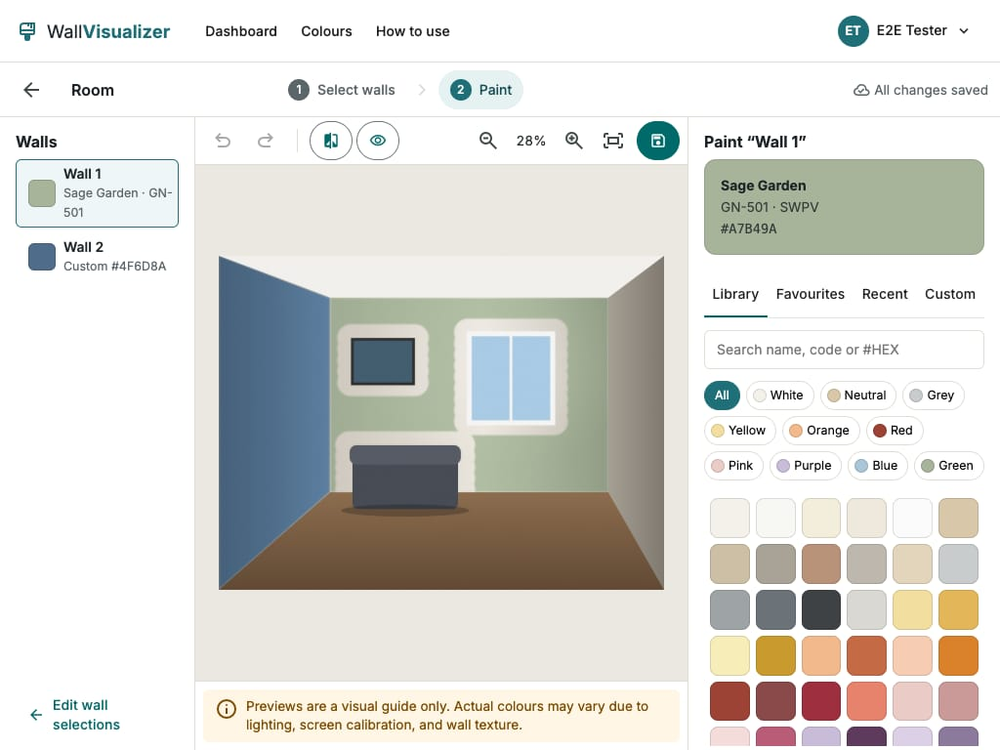
Node.js 18 or later, Docker (for a local MongoDB) and Git.
admin@swpv.local / ChangeMe123!. For the live site, admin credentials are provided separately.http://localhost:5050/api/docsnpm test in server; npx ng test in client; npx playwright test in e2e.docs/spec.md · Deployment guide: docs/deployment.md